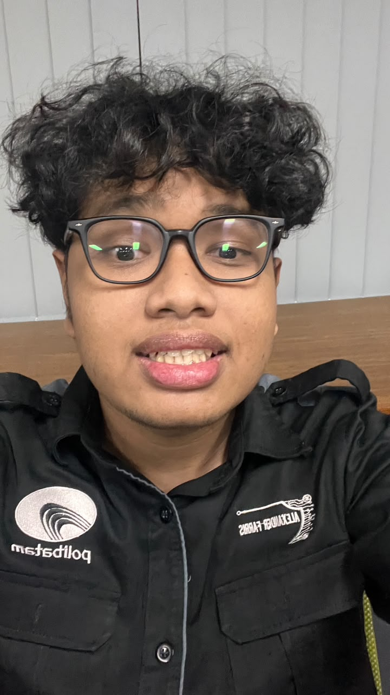

Mahasiswa Rekayasa keamanan siber di Universitas Politeknik Negri Batam
Batam, 10 Agustus 2006.
Saya adalah Mahasiswa semester 3 Teknik informatika prodi Rekayasa Keamanan Siber yang tertarik dengan dunia keamanan siber dan pengembangan web. Senang belajar hal-hal baru dan selalu ingin berusaha untuk meningkatkan kemampuan saya dalam bidang keamanan jaringan dan web.
Politeknik Negri Batam, Prodi Rekayasa keamanan siber, fokus pada keamanan jaringan dan web.
Lulus dari jurusan Teknik Komputer dan Jaringan, dengan pengalaman dalam administrasi jaringan dan keamanan dasar.